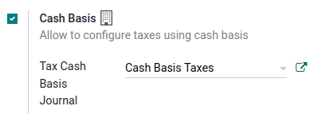
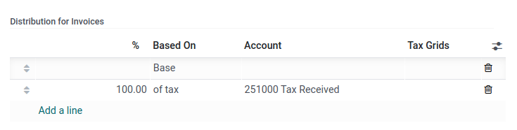
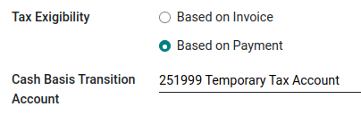

Impuestos de base de efectivo¶
Los impuestos de base de efectivo se deben pagar cuando se realiza el pago, a diferencia de los impuestos estándar que se deben pagar cuando se confirma la factura. En algunos países (y bajo ciertas condiciones) es obligatorio declarar los ingresos y gastos al gobierno según el método de base de efectivo.
Example
Si vende un producto en el primer trimestre de su año fiscal y recibe el pago en el segundo trimestre. Según el método de base de efectivo, el impuesto que debe pagar es el correspondiente al segundo trimestre.
Configuración¶
Vaya a y habilite la opción base de efectivo en la sección impuestos.
Después defina el diario de base de impuestos en efectivo. Haga clic en el botón de enlace externo a lado del diario para actualizar sus propiedades predeterminadas, como el nombre de diario, tipo o código corto.
Nota
De forma predeterminada, los asientos contables del diario de impuestos de base de efectivo se nombran mediante el código corto CABA .
Una vez hecho esto, vaya a para configurar sus impuestos. Puede crear un nuevo impuesto o actualizar uno existente al hacer clic en él.
La columna cuenta refleja las cuentas transicionales adecuadas para registrar impuestos hasta que se registre el pago.
En la pestaña opciones avanzadas puede decidir cuál es la exigiilidad del impuesto. Seleccione con base en el pago para que el impuesto se deba pagar cuando se reciba el pago de la factura. Puede también definir la cuenta de transición de base de efectivo en la que se registra el importe de impuestos siempre y cuando no se haya conciliado la factura.
Impacto de los impuestos de base de efectivo en la contabilidad¶
Para ilustrar el impacto de los impuestos de base de efectivo en las transacciones contables, veamos el ejemplo de las ventas de un producto que cuesta $1,000 con un impuesto de base de efectivo de 15%.

Se crean los siguientes asientos en su contabilidad, y el reporte de impuestos está vacío.
Diario de cliente (INV) |
|
|---|---|
Debe |
Haber |
Cuentas por cobrar $1,150 |
|
Ingresos $1,000 |
|
Cuenta de impuestos temporal $150 |
|
Cuando recibe un pago, se registrará de la siguiente manera:
Diario bancario (BANK) |
|
|---|---|
Debe |
Haber |
Banco $1,150 |
|
Cuentas por cobrar $1,150 |
|
Nota
Una vez que registre el pago, puede usar el botón inteligente asientos de base de efectivo en la factura para acceder a ellos directamente.
Por último, al momento de la conciliación de la factura con el pago, se crea el siguiente asiento de forma automática:
Diario de impuesto de base de efectivo (Caba) |
|
|---|---|
Debe |
Haber |
Cuenta de ingresos $1,000 |
|
Cuenta de impuestos temporal $150 |
|
Cuenta de ingresos $1,000 |
|
Impuestos recibidos $150 |
|
Los apuntes contables cuenta de ingresos y cuenta de ingresos son neutrales, pero son necesarios para garantizar que los reportes de impuestos en Odoo sean correctos y tengan importes de impuestos base correctos.
Se recomienda utilizar una cuenta de base de impuestos recibidos para que su balance sea cero y su cuenta de ingresos no se vea afectada por movimientos contables innecesarios. Para hacerlo, vaya a y seleccione una cuenta de base de impuestos recibidos en base de efectivo.